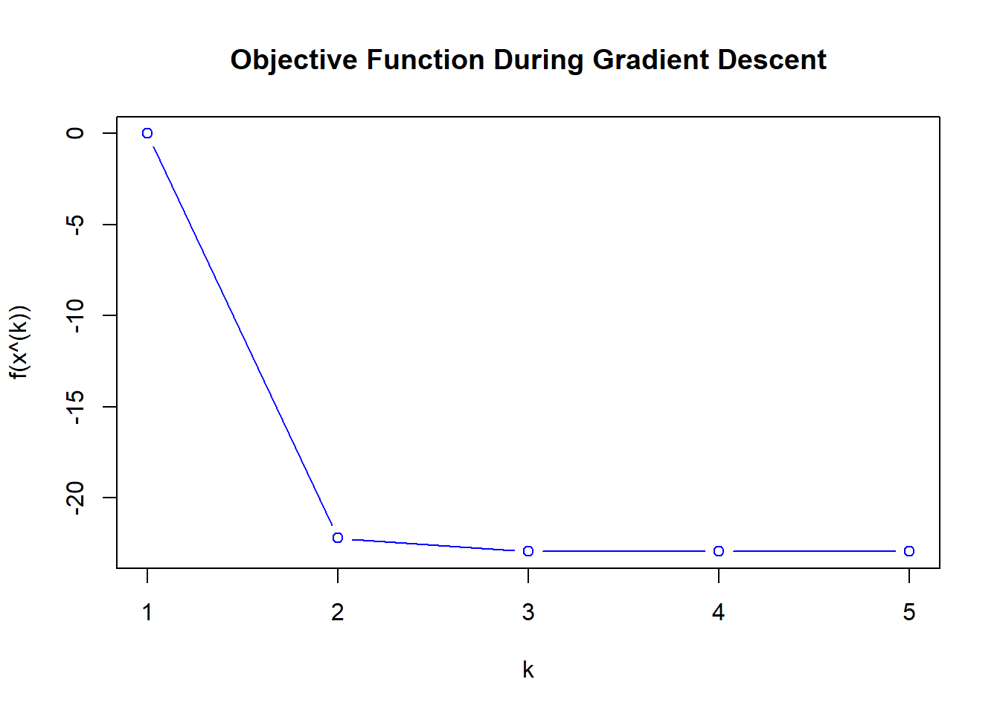
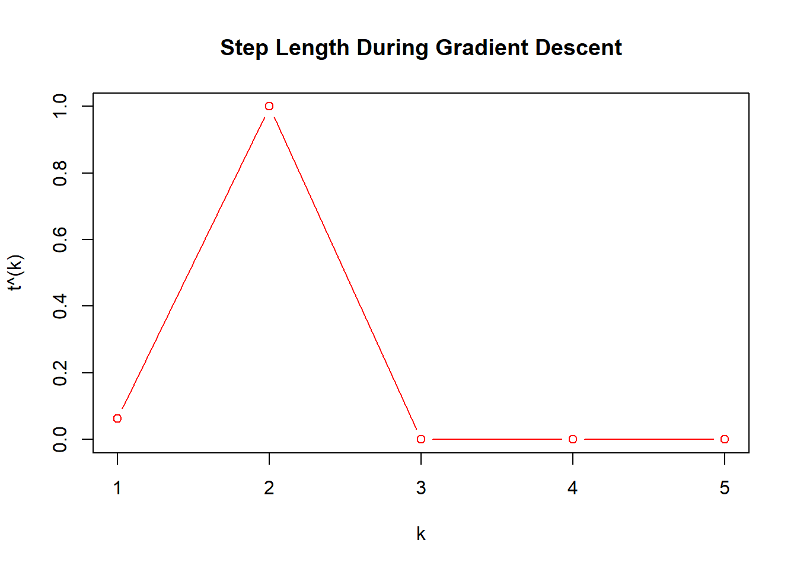

gamma <- 0.01
beta <- 0.5
max_i <- 5
eta <- 0.01
# size
m <- 20
n <- 10
# initialization
x <- rep(0, n)
A <- matrix(runif(m * n), nrow = m)
Ax <- A %*% x
# storage
values <- numeric(max_i)
steplen <- numeric(max_i)
n_i <- numeric(max_i)
# defination of function
f <- function(x, Ax) {
-sum(log(1 - Ax)) - sum(log(1 + x)) - sum(log(1 - x))
}
gradient <- function(x, Ax, A) {
t(A) %*% (1 / (1 - Ax)) - 1 / (1 + x) - 1 / (1 - x)
}
# for loop
for (i in 1:max_i) {
# f(x)
val <- f(x, Ax)
# Df(x)
grad <- gradient(x, Ax, A)
# store iteration values
n_i[i] <- i
values[i] <- val
# stop statement: ||Df(x)||_2 \leq \eta
if (is.infinite(norm(grad, type = "2")) || is.na(norm(grad, type = "2"))) {
break
} else if (norm(grad, type = "2") < eta) {
values <- values[1:i]
n_i <- n_i[1:i]
break
}
# direction of gradient method
v <- -grad
# backtracking line search: loop for t
t <- 1
while (max(A %*% (x + t * v)) >= 1 || max(x + t * v) >= 1 || min(x + t * v) <= -1) {
t <- beta * t
}
# Ensure to update Ax only once per iteration
new_x <- x + t * v
new_Ax <- A %*% new_x
# Corrected position of the while loop condition check
while (f(new_x, new_Ax) > val + gamma * t * crossprod(grad, v)) {
t <- beta * t
new_x <- x + t * v
new_Ax <- A %*% new_x
}
# iteration
x <- new_x
Ax <- new_Ax
# store iteration step length
steplen[i] <- t
# Corrected progress message variable
cat("i:", i, "Value:", val,"Step Length:", t, "\n")
}i: 1 Value: 0 Step Length: 0.0625
i: 2 Value: -22.20123 Step Length: 1
i: 3 Value: -22.93227 Step Length: 8.881784e-16
i: 4 Value: -22.93227 Step Length: 4.440892e-16
i: 5 Value: -22.93227 Step Length: 1.776357e-15 plot(values, type = 'b', col = 'blue', xlab = 'k', ylab = 'f(x^(k))', main = 'Objective Function During Gradient Descent')
plot(steplen, type = 'b', col = 'red', xlab = 'k', ylab = 't^(k)', main = 'Step Length During Gradient Descent')